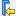
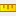

This window is one of five windows displayed in the Hardware ILA dashboard by default. The ILA Waveform window displays activity on selected probes of the ILA debug core.
The ILA Waveform window is split into two regions, with the probe names and values listed on the left, and the waveforms of data captured from the hardware device displayed on the right. The right-click menus differ between the two regions. On the probe side commands are available to manage probe names and radixes, group probes, define virtual buses, and add dividers to help organize the displayed data. With a single probe selected, you can use the Edit Enumeration command to redefine displayed or exported values for the probe. You can also use Create User Defined Probe to group multiple probes together in a new virtual probe. On the waveform side the right-click menu commands are available to manage the timeline, add markers, and move up and down the timeline to different transition events. Selecting an object on the left, provides focus for some of the waveform commands on the right.
The ILA Waveform window offers a toolbar to control various aspects of the ILA debug core, of the displayed probes, and for navigating the timeline through the displayed waveforms. The toolbar includes the following commands for controlling the ILA debug core and the displayed probes:
 |
Add probes | Opens the Add Probes dialog box, which lists the probes associated with the ILA debug core. Select probes and click OK to add them to the window. |
 |
Remove selected probes | Removes selected probes from the ILA Waveform window. |
 |
Toggle Auto-Retrigger | Enable or disable the automatic re-trigger to re-arm the ILA core trigger after a successful trigger, capture, display operation has completed. |
 |
Run Trigger | Arm the selected ILA core to detect trigger events that are defined by the core's basic or advanced trigger settings. |
 |
Run Immediate | Arm the selected ILA core to trigger immediately regardless of the trigger settings. |
 |
Stop Trigger | Stop the trigger on the selected ILA core. |
 |
Export ILA Waveform Data | Open the Export ILA Data dialog box to write the data captured by the ILA core, and displayed in the Waveform window. |
You can use the following commands to navigate, mark, and measure the displayed waveforms:
| Go to Cursor | Used when the waveform display is zoomed in, this command centers the display on the current cursor location. | |
 |
Go to Time 0 | Move the waveform cursor to the start of the captured data. |
 |
Go to Last Time | Move the waveform cursor to the end of the captured data. |
| Previous Transition | With a probe selected on the left side of the ILA Waveform window, this command moves the waveform cursor from its current location to the point of the prior transition on the selected probe. | |
| Next Transition | With a probe selected on the left side of the Waveform window, this command moves the waveform cursor from its current location to the point of the next transition on the selected probe. | |
| Add Marker | Insert a marker at the current cursor location. | |
|  | Previous Marker | With one or more markers added to the timeline, move the cursor from its current location to the point of the prior marker. |
 |
Next Marker | With one or more markers added to the timeline, move the cursor from its current location to the point of the next marker. |
| Swap Cursors | With multiple cursors displayed on the timeline, switch between
the cursors. Note: You can add a second cursor to the timeline by
holding the Ctrl key, selecting the cursor, and clicking and
dragging the mouse. For more information refer to this link in the
Vivado Design Suite User Guide: Programming and
Debug (UG908).
|
|
| Snap to Transition | When moving the cursor, snap it to the nearest transition point in the timeline. Disabling this option allows the free movement of the cursor along the timeline. | |
|  | Floating Ruler | With multiple cursors displayed on the timeline, this command displays or hides the floating ruler at the bottom of the waveform display. The ruler can be used to measure time intervals between events. |
You can configure what is displayed in the ILA Waveform window, and pan and zoom to display the level of detail needed to see specific areas of a waveform, or time ranges of the captured data. The toolbar menu has the following commands for controlling what is displayed in the ILA Waveform window.
 |
Options | Display selectable options to configure what is displayed in the ILA Waveform window, such as setting signal radix, and truncating signal names. For more information refer to this link in the Vivado Design Suite User Guide: Programming and Debug (UG908). |
| Zoom Fit | Zoom out to view all the captured data in the ILA Waveform window. | |
 |
Zoom In | Display a smaller period of the captured data, with greater detail of the signal waveforms and transition events. |
 |
Zoom Out | Display more of the captured data. |
The Waveform window appears in the Vivado® IDE workspace. For more information on workspace windows refer to this link in the Vivado Design Suite User Guide: Using the Vivado IDE (UG893).
See Also
| Vivado Design Suite User Guide: Programming and Debug (UG908), Viewing ILA Probe Data in the Waveform Viewer | |
| Vivado Design Suite Tcl Command Reference Guide (UG835), display_hw_ila_data |